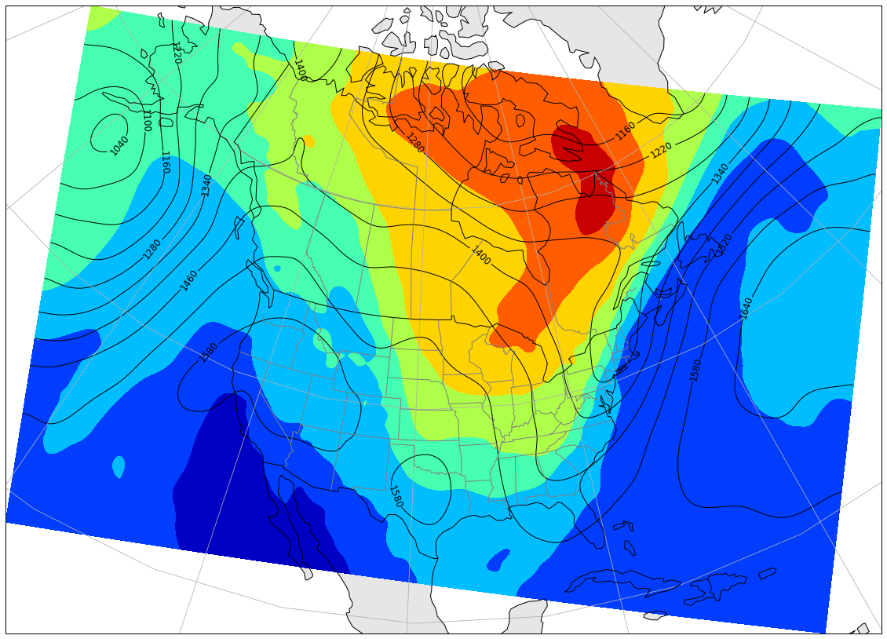
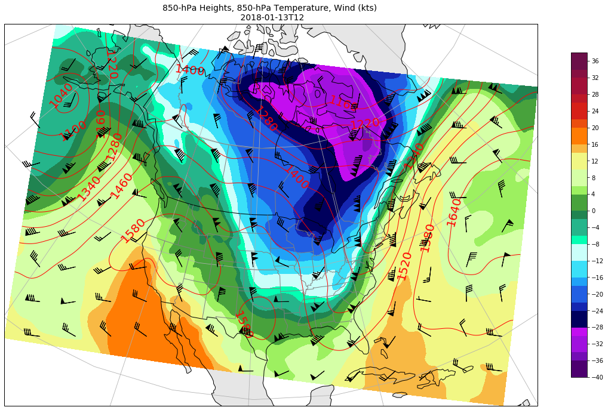

Create Synoptic NARR map

Working with Netcd4-python data: Synoptic map
In this tutorial, we will use the features of the Python xarray library to process and analyze Netcdf files. We will then use matplotlib to plot it, and cartopy to map our analyse.
We will see the different steps to plot an exemple of synoptic map over North America with: + geopotential 850hpa + Temperature 850hpa + UU,VV 250hpa
We fist import the necessary packages. The plt.rcParams[‘figure.figsize’] just sets the size of the inline figures in this notebook to make them larger and easier to read.
import xarray as xr
import cartopy.crs as ccrs
import cartopy.feature as cfeature
import matplotlib.pyplot as plt
import matplotlib as mpl
import numpy as np
import warnings
warnings.filterwarnings("ignore")
plt.rcParams['figure.figsize'] = (20, 20)
We will work with fields from NARR reanalysis at pressure levels.
Data can be directly download on this link.
tas = xr.open_dataset('J:/REANALYSES/NARR/3hrs/NARR_air_lc_2018_01_3hrs.nc')
uu = xr.open_dataset('J:/REANALYSES/NARR/3hrs/NARR_uwnd_lc_2018_01_3hrs.nc')
vv = xr.open_dataset('J:/REANALYSES/NARR/3hrs/NARR_vwnd_lc_2018_01_3hrs.nc')
omega = xr.open_dataset('J:/REANALYSES/NARR/Daily/omega/NARR_omega_lc_2018_01_d.nc')
hgt = xr.open_dataset('J:/REANALYSES/NARR/3hrs/NARR_hgt_lc_2018_01_3hrs.nc')
- Exploring the data
We can quickly explore our datasets by using some methods of the xarray library:
- DS.var
- DS.dims
= DS.coords
- DS.attrs
hgt
<xarray.Dataset>
Dimensions: (level: 29, time: 248, x: 349, y: 277)
Coordinates:
* time (time) datetime64[ns] 2018-01-01 ... 2018-01-31T21:00:00
* level (level) float32 1000.0 975.0 950.0 ... 150.0 125.0 100.0
lat (y, x) float32 ...
lon (y, x) float32 ...
* y (y) float32 0.0 32463.0 64926.0 ... 8927325.0 8959788.0
* x (x) float32 0.0 32463.0 64926.0 ... 11264660.0 11297120.0
Data variables:
Lambert_Conformal int32 ...
hgt (time, level, y, x) float32 ...
Attributes:
Conventions: CF-1.2
centerlat: 50.0
centerlon: -107.0
comments:
institution: National Centers for Environmental Prediction
latcorners: [ 1.000001 0.897945 46.3544 46.63433 ]
loncorners: [-145.5 -68.32005 -2.569891 148.6418 ]
platform: Model
standardpar1: 50.0
standardpar2: 50.000001
title: 8x Daily NARR
history: created Mon Jul 18 17:37:00 MDT 2016 by NOAA/ESRL/PSD
dataset_title: NCEP North American Regional Reanalysis (NARR)
references: https://www.esrl.noaa.gov/psd/data/gridded/data.narr.html
source: http://www.emc.ncep.noaa.gov/mmb/rreanl/index.html
hgt.coords
Coordinates:
* time (time) datetime64[ns] 2018-01-01 ... 2018-01-31T21:00:00
* level (level) float32 1000.0 975.0 950.0 925.0 ... 150.0 125.0 100.0
lat (y, x) float32 ...
lon (y, x) float32 ...
* y (y) float32 0.0 32463.0 64926.0 ... 8894862.0 8927325.0 8959788.0
* x (x) float32 0.0 32463.0 64926.0 ... 11264660.0 11297120.0
We can quickly explore our datasets by using some methods of the xarray library.
We want to analyse a specific date : 13/01/2018 at 12UTC.
tas.time
<xarray.DataArray 'time' (time: 248)>
array(['2018-01-01T00:00:00.000000000', '2018-01-01T03:00:00.000000000',
'2018-01-01T06:00:00.000000000', ..., '2018-01-31T15:00:00.000000000',
'2018-01-31T18:00:00.000000000', '2018-01-31T21:00:00.000000000'],
dtype='datetime64[ns]')
Coordinates:
* time (time) datetime64[ns] 2018-01-01 ... 2018-01-31T21:00:00
Attributes:
axis: T
coordinate_defines: point
delta_t: 0000-00-00 03:00:00
long_name: Time
standard_name: time
actual_range: [1910952. 1911693.]
#To select a specifi date:
date = '2018-01-13T12'
tas.sel(time=date).sel(level=500).isel(x=slice(60,340), y=slice(50,230))
<xarray.Dataset>
Dimensions: (x: 280, y: 180)
Coordinates:
time datetime64[ns] 2018-01-13T12:00:00
level float32 500.0
lat (y, x) float32 ...
lon (y, x) float32 ...
* y (y) float32 1623150.0 1655613.0 ... 7401564.0 7434027.0
* x (x) float32 1947780.0 1980243.0 ... 10972490.0 11004960.0
Data variables:
Lambert_Conformal int32 ...
air (y, x) float32 ...
Attributes:
Conventions: CF-1.2
centerlat: 50.0
centerlon: -107.0
comments:
institution: National Centers for Environmental Prediction
latcorners: [ 1.000001 0.897945 46.3544 46.63433 ]
loncorners: [-145.5 -68.32005 -2.569891 148.6418 ]
platform: Model
standardpar1: 50.0
standardpar2: 50.000001
title: 8x Daily NARR
history: created Mon Jul 18 17:31:43 MDT 2016 by NOAA/ESRL/PSD
dataset_title: NCEP North American Regional Reanalysis (NARR)
references: https://www.esrl.noaa.gov/psd/data/gridded/data.narr.html
source: http://www.emc.ncep.noaa.gov/mmb/rreanl/index.html
hgt850 = hgt['hgt'].sel(time=date).sel(level=850).isel(x=slice(60,340), y=slice(50,230))
tt850 = tas['air'].sel(time=date).sel(level=850).isel(x=slice(60,340), y=slice(50,230))
urel250 = uu['uwnd'].sel(time=date).sel(level=250).isel(x=slice(60,340), y=slice(50,230))
vrel250 = vv['vwnd'].sel(time=date).sel(level=250).isel(x=slice(60,340), y=slice(50,230))
def plotMap():
#Set the projection information
proj = ccrs.LambertConformal(central_longitude=-97.0,central_latitude=53, standard_parallels=[53])
#Create a figure with an axes object on which we will plot. Pass the projection to that axes.
fig, ax = plt.subplots(subplot_kw=dict(projection=proj))
#Zoom in
#ax.set_extent([-140,-60,10,70])
#Add map features
ax.add_feature(cfeature.LAND, facecolor='0.9') #Grayscale colors can be set using 0 (black) to 1 (white)
ax.add_feature(cfeature.LAKES, alpha=0.9) #Alpha sets transparency (0 is transparent, 1 is solid)
ax.add_feature(cfeature.BORDERS, zorder=10)
ax.add_feature(cfeature.COASTLINE, zorder=10)
#We can use additional features from Natural Earth (http://www.naturalearthdata.com/features/)
states_provinces = cfeature.NaturalEarthFeature(
category='cultural', name='admin_1_states_provinces_lines',
scale='50m', facecolor='none')
ax.add_feature(states_provinces, edgecolor='gray', zorder=10)
#Add lat/lon gridlines every 20° to the map
ax.gridlines(xlocs=np.arange(0,361,20), ylocs=np.arange(-80,90,20))
return fig, ax
We specify the interval for our height contours. We use numpy's function arange to select a range of contours from 500 to 2000 m, every 60 m.
A key thing to note is the transform argument at the end of the contour call. This is what tells matplotlib to transform our variable in lat/lon coordinates onto our map projection coordinates.
We then plot temperature in filled contours. Matplotlib has many colormaps from which to choose. Here, we use cm.jet_r.
#Import scipy.ndimage to get the gaussian_filter function
import scipy.ndimage as ndimage
hght_levels = np.arange(500,2000,60)
#Plot a new figure and map axes
fig, ax = plotMap()
## Choisissons une colormap
cmap0=plt.cm.jet_r
cmap0.set_under('w') ## on met en blanc les valeurs inferieures au min de clev
cmap0.set_over('darkblue')
#Smooth and re-plot the temperature field
tt_smooth = ndimage.gaussian_filter(tt850.values-273.15, sigma=1.5, order=0)
tt_contour = ax.contourf(tt850.lon.values, tt850.lat.values, tt_smooth, zorder=2,
cmap=cmap0, transform = ccrs.PlateCarree())
#Smooth and re-plot the height field
hght_smooth = ndimage.gaussian_filter(hgt850, sigma=3, order=0)
hght_contour = ax.contour(hgt850.lon, hgt850.lat, hght_smooth, levels=hght_levels, linewidths=1, colors='k',transform = ccrs.PlateCarree())
#Plot contour labels for the heights, leaving a break in the contours for the text (inline=True)
plt.clabel(hght_contour, hght_levels, inline=True, fmt='%1i', fontsize=12)
<a list of 18 text.Text objects>

We can improve our synoptic map with adding wind barbs in Knots and using our own colormap.
#Import scipy.ndimage to get the gaussian_filter function
import scipy.ndimage as ndimage
hght_levels = np.arange(500,2000,60)
tt_levels = np.arange(-40,40,2)
#Plot a new figure and map axes
fig, ax = plotMap()
## Choisissons une colormap
Y=np.array([[77,0,111],[115,14,181],[160,17,222],[195,14,240],\
[0,0,93],[21,38,177],[33,95,227],[32,162,247],[59,224,248],[202,255,250],\
[4,255,179],[37,181,139],[32,132,81],[72,162,60],[157,240,96],[213,255,166],\
[241,247,132],[248,185,68],[255,124,4],[235,78,14],[215,32,24],[189,24,40],[162,16,56],[135,16,65],[107,15,73]])/255.
colbar=mpl.colors.ListedColormap(Y)
cmap0=plt.cm.jet_r
cmap0.set_under('w') ## on met en blanc les valeurs inferieures au min de clev
cmap0.set_over('darkblue')
#Smooth and re-plot the temperature field
tt_smooth = ndimage.gaussian_filter(tt850.values-273.15, sigma=1.5, order=0)
tt_contour = ax.contourf(tt850.lon.values, tt850.lat.values, tt_smooth, levels=tt_levels, zorder=2,
cmap=colbar, transform = ccrs.PlateCarree())
#Smooth and re-plot the height field
hght_smooth = ndimage.gaussian_filter(hgt850, sigma=3, order=0)
hght_contour = ax.contour(hgt850.lon, hgt850.lat, hght_smooth, levels=hght_levels, linewidths=1, colors='red',transform = ccrs.PlateCarree())
#Plot contour labels for the heights, leaving a break in the contours for the text (inline=True)
plt.clabel(hght_contour, hght_levels, inline=True, fmt='%1i', fontsize=20)
#Plot the barbs
ax.barbs(urel250.lon.values, urel250.lat.values, urel250.values*1.944, vrel250.values*1.944, regrid_shape=12, zorder=20, transform=ccrs.PlateCarree())
#Create a colorbar and shrink it down a bit.
cb = plt.colorbar(tt_contour, shrink=0.5, ticks=np.arange(-40, 40.1, 4))
#Set the title
ax.set_title('850-hPa Heights, 850-hPa Temperature, Wind (kts) \n '+str(date), fontsize=14)
Text(0.5, 1.0, '850-hPa Heights, 850-hPa Temperature, Wind (kts) \n 2018-01-13T12')

Guillaume Dueymes
Data Scientist and Research Assistant
My research interests include data science, data management and climate science.